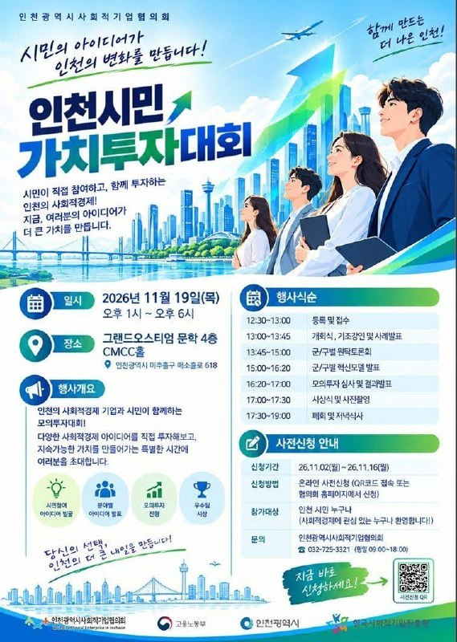
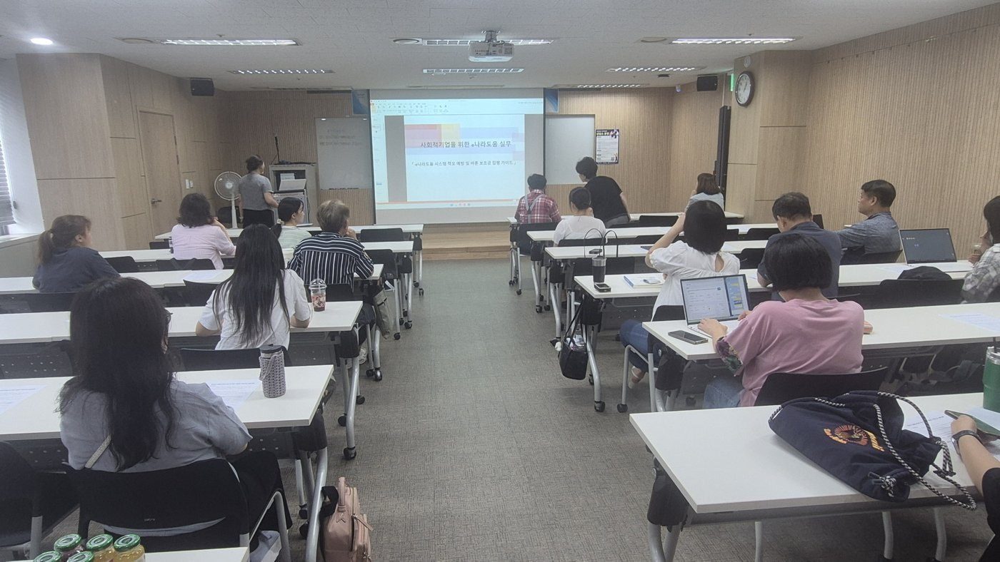
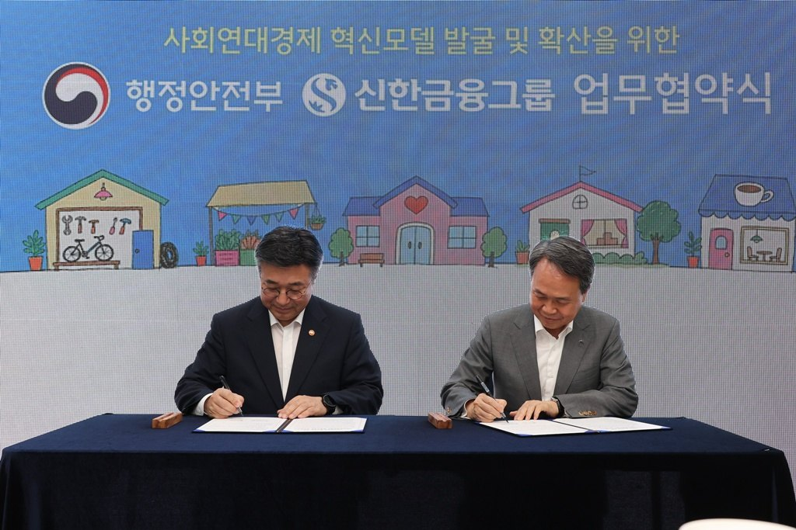

시민이 고르는 사회연대경제 해법…인천시민 가치투자대회 19일
인천광역시사회적기업협의회, 군·구 원탁토론 거쳐 모의투자
기본법 시행 넉 달 앞, 사회연대경제 돈줄을 시민에게 묻는다
AI경제저널=김갑봉 기자 | 인천 시민이 사회연대경제 기업의 투자자로 나선다. 인천광역시사회적기업협의회는 11월 19일 오후 1시 미추홀구 그랜드오스티엄 문학 4층 CMCC홀에서 「인천시민 가치투자대회」를 연다.
시민과 사회연대경제 기업이 지역 문제의 해법을 내놓고, 시민이 그 해법에 모의로 투자한다. 협의회는 「시민의 아이디어가 인천의 변화를 만듭니다」를 내걸었다. 고용노동부·인천시·한국사회적기업진흥원이 함께 이름을 올렸다.

원탁토론에서 모의투자까지 다섯 시간
행사는 낮 12시 30분 등록으로 시작한다. 1시 개회식에 이어 기조강연과 사례발표가 열린다.
1시 45분부터는 군·구별 원탁토론회다. 3시부터 군·구별 혁신모델을 발표한다. 지역마다 동네 문제를 놓고 머리를 맞댄 뒤, 그 해법을 사업 모델로 다듬어 내놓는다.
4시 20분 모의투자 심사와 결과발표가 이어진다. 5시 시상식, 5시 30분 폐회와 저녁식사로 마무리한다.
사전신청은 11월 16일까지 받는다. 포스터의 QR코드나 협의회 누리집에서 신청한다. 인천 시민이면 누구나, 사회연대경제에 관심 있는 사람이면 누구나 참여할 수 있다. 문의는 협의회(032-725-3321)로 하면 된다.
영세한 1426곳, 돈줄은 좁다

인천의 사회연대경제 조직은 2024년 2월 1426개였다. 인천연구원 이정용·변서후 연구진이 「인천시 사회적경제 집적화 시설 조성을 위한 전략방향 연구」에서 집계했다. 인천시가 올해 3월 공공데이터로 낸 명단에는 인증·예비 사회적기업 265곳이 올라 있다.
연구진은 인천 생태계의 약점으로 기업의 영세성과 약한 연대 기반을 꼽았다. 인천을 대표할 만한 기업이 없다는 점도 들었다. 처방은 금융 접근성 확대와 재원 마련의 다각화다.
돈줄은 나랏돈에 기대 왔다.
인천시의 (예비)사회적기업 일자리창출사업은 정부 정책 기조가 바뀌면서 2025년 한시적으로 멈췄다. 올해 다시 열어 4월 17개 사를 골랐다.
이 사업은 참여 노동자 인건비를 1인당 월 50만원에서 90만원까지 지원한다. 보조금이 한 해 끊기면 기업의 인건비 계획도 함께 흔들린다.
정부 진단도 같은 곳을 가리킨다. 관계부처 합동 「사회연대경제 발전 종합계획」은 현장 의견을 빌려 이 문제를 짚었다. 사회적 가치를 앞세우는 조직이라 민간 기관의 자금을 받기 어렵다는 진단이다.
지역기금 길 연 기본법, 잣대는 시민에게

법은 지역 기금의 길을 열어 뒀다.
사회연대경제기본법 제17조는 행정안전부장관이 사회연대금융 중개기관을 지정하게 했다. 중개기관은 지방자치단체와 금융기관에서 자금을 받아 지역기금과 민간기금을 관리·운용할 수 있다.
정부는 올해 사회적 가치를 만드는 기업에 투자하는 임팩트펀드 333억원을 조성한다. 사회연대경제 기업을 먼저 뽑는 팁스(TIPS) 부문도 새로 만든다.
지역기금이 생기면 돈을 어디에 넣을지 고를 잣대가 필요하다. 이번 대회는 그 잣대를 시민에게 먼저 묻는다. 어느 해법이 동네를 바꾸는지 시민이 직접 따져 보고 표로 투자한다.
기본법 시행 넉 달 앞, 첫 법정 계획
사회연대경제기본법은 2027년 3월 16일 시행된다. 시·도는 5년마다 시·도기본계획을 세운다(제9조). 계획에는 재원의 규모와 조달방안, 사회연대금융 활성화 방안을 담아야 한다.
인천시는 11월 6일 「인천광역시 사회연대경제 발전 기본계획 수립 용역」을 공고했다. 2027~2031년 첫 법정 계획이다. 조직과 주민 1000명 이상, 전문가 50명 이상에게 설문해 분야별 과제와 재원을 정한다.
계획은 시·도 지역위원회의 심의를 거친다. 법은 이 위원회에 지역 사회연대경제조직의 대표를 넣도록 했다(제13조). 인천연구원 연구진도 계획 단계부터 당사자 조직과 시민이 참여하는 거버넌스를 주문했다.
시민의 표, 투자 잣대가 될까
모의투자는 실제 돈이 오가지 않는다.
대신 시민이 어떤 사회적 가치에 값을 매기는지가 드러난다. 기금과 우선구매, 위탁의 기준을 세울 때 견줘 볼 만한 자료다.
혁신모델은 이미 돈과 이어지고 있다. 강화군의 「강화 생활권 순환경제 구축사업」은 올해 행정안전부 「사회연대경제 혁신모델 발굴 및 확산」 공모에 뽑혀 국비 5억원을 확보했다.
협의회는 포스터에 「당신의 선택, 인천의 더 큰 내일을 만듭니다」라고 적었다. 시민이 고른 혁신모델이 대회 뒤 어떤 지원으로 이어질지가 다음 과제로 남는다.
참고문헌
- 인천광역시사회적기업협의회, 「인천시민 가치투자대회」 안내 포스터, 2026. 11.
- 「사회연대경제기본법」(법률 제21921호, 2026. 9. 15. 제정, 2027. 3. 16. 시행), 국가법령정보센터, https://www.law.go.kr/LSW/lsInfoP.do?lsiSeq=289577
- 관계부처 합동, 「사회연대경제 발전 종합계획」(별첨), 2026. 6. 30., https://fsc.go.kr/no010101/87220
- 이정용·변서후, 「인천시 사회적경제 집적화 시설 조성을 위한 전략방향 연구」, 인천연구원, 2024, https://www.ii.re.kr/base/board/read?boardManagementNo=14&boardNo=16912&menuLevel=2&menuNo=76
- 인천광역시, 「인천광역시 사회연대경제 발전 기본계획 수립 용역」 입찰공고·제안요청서·과업지시서, 2026. 11. 6., https://announce.incheon.go.kr
- "인천시, 사회적기업 일자리창출사업 참여기업 모집", 인천광역시 보도자료, 2026. 2. 24., https://www.incheon.go.kr/IC010205/view?repSeq=DOM_0000000014223440
- "인천시, 사회적기업 일자리창출사업 참여기업 17개 사 선정", 인천광역시 보도자료, 2026. 4. 28., https://www.incheon.go.kr/IC010205
- "인천시, 행안부 사회연대경제 혁신모델 공모 선정", 인천광역시 보도자료, 2026. 4. 22., https://www.incheon.go.kr/IC010205
- 인천광역시 사회적경제과, 「인천광역시_사회적기업 현황_20260306」, 공공데이터포털, 2026. 3. 9., https://www.data.go.kr/data/15099887/fileData.do
사진 출처
- [사진1] 인천광역시사회적기업협의회 「인천시민 가치투자대회」 안내 포스터
- [사진2] 인천광역시 보도자료 「인천시, 사회적기업 보조금 부정수급 예방 교육 실시」(2026. 8. 14.) 붙임 사진, 공공누리 제1유형(출처표시)
- [사진3] 행정안전부 사진자료실 「행안부-신한금융그룹, 사회연대경제 혁신모델 활성화 업무협약」(2026. 7. 8.), 공공누리 제1유형(출처표시)